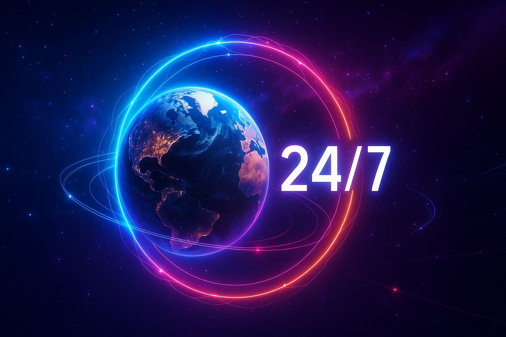

Our Services
Tailored automation and AI solutions designed to streamline your operations, optimise your resources and accelerate your growth.
Tailored automation and AI solutions designed to streamline your operations, optimise your resources and accelerate your growth.
Boost customer attraction and drive sales with targeted, automated marketing workflows. We design streamlined processes and weave GenAI into your systems so you can create, publish and repurpose assets on autopilot.
Create automated workflows and data systems to optimise resources and increase ROI. Our solutions combine intelligent process automation with powerful analytics so you can eliminate busywork, make data‑driven decisions and scale with confidence.
Digitise, organise and route your paperwork with AI‑powered document management. Our solutions classify, extract and deliver information exactly where it’s needed, saving you hours of manual sorting and ensuring your team always has access to the right files.
Transform raw data into actionable insights. Our analytics solutions consolidate data from across your organisation into intuitive dashboards and reports, giving you the clarity and foresight to make smarter decisions faster.
Connect your tools and platforms into a seamless ecosystem. We design and implement integrations that unify your stack, eliminate manual data entry and unlock new opportunities for automation.
We make AI accessible for smaller companies without deep pockets or in‑house expertise. Our consultants cut through the noise to identify the right models and guide you from strategy to implementation.

Simplify invoicing, payments and accounting with automated financial workflows. We integrate your billing systems, payment gateways and accounting software to ensure transactions are processed smoothly and accurately.
Maximise efficiency by intelligently scheduling tasks and allocating resources. Our optimisation engines analyse workloads and availability to ensure the right people and assets are assigned at the right time.
Bridge the gap between teams, tools and locations. We design cloud‑first architectures and scalable systems that keep your workforce connected and productive—no matter where they are in the world.
A glimpse into the ideas and technology that inspire our work.


Our team is ready to craft a personalised solution that propels your business forward.
Claim Your Free Audit